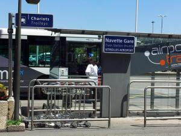
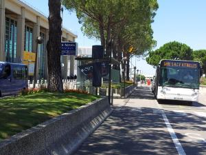

Venue and transportation
IEEE VR 2015 will be hosted at the Arles Congress Center, in Camargue – Provence, France.
Address:
-
Avenue de la 1re Division France Libre, 13200 Arles.
Coming by plane:
-
You will arrive at Marseille International Airport that is well connected to a large number of French and European cities through regular and low-cost airlines.
-
See http://www.marseille-airport.com/ for more information.
-
-
From the airport:
-
a direct bus (free) will connect you to Gare de Vitrolles-Aéroport-Marseille-Provence from the airport (Hall 1, see pictures).
-
a direct train will connect you to Arles train station from Gare de Vitrolles-Aéroport-Marseille-Provence, in about 30 minutes.
-
-
You may also fly to Lyon Saint Exupéry, or Paris Charles de Gaulle. Both airports have a TGV station with direct TGV to Avignon or Arles (see “by train”).

Coming by train:
-
High-speed train (TGV) connects Paris Gare de Lyon (resp. Lyon Saint-Exupéry) to Avignon TGV station, in about 2h40 (resp. 1h30). Shuttle buses synchronized with TGV arrival connect Avignon TGV station to Arles train station in about 50 minutes. Each day, one or two direct TGV connect Paris or Lyon to Arles (2 hours from Lyon). For more information.
Bike rental:
You can rent a bike on the VR2015 site. Booking is from now on the website